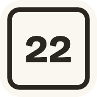

Recreated from the live source (DriveTimes.tsx, TypicalChart.tsx, HistoryPage.tsx, WeatherStrip.tsx, ReportModal.tsx) using the Trailhead dark tokens. Root causes found in code: the chart is one fixed 940-unit SVG viewBox, so its 13-unit axis text renders at ~5px on a phone; the report sheet lives inside a padded flex overlay instead of being pinned to the viewport, so a tall sheet pushes off-screen. "Current" reference cards shown muted for comparison.
A · Drive-time rows — route name promoted to match the numeral; "as of" said once, not six times
current Recreated from DriveTimes.tsx — 14px name vs 22px numeral, "as of" repeated per row
Drive times right now
⇄ Flip direction
Victor → Jackson
Town Square
Driggs → Jackson
Town Square
Victor → Teton Village
JHMR
1a Balanced hierarchy — route name 16.5px display bold, numeral 19px; freshness stated once in the header
Drive times right now
⇄ Flip
Updated 10:50 PM
Victor → Jackson
Town Square
38 min
2 min faster than usual
Driggs → Jackson
Town Square
Victor → Teton Village
JHMR
1b Compact single-line rows — sublabel folds inline, equal 16px name / 17px numeral, tighter vertical rhythm
Drive times right now
10:50 PM · ⇄ Flip
Victor → Jackson Town Sq
38 min
Driggs → Jackson Town Sq
48 min
Victor → Teton Village JHMR
37 min
Driggs → Teton Village JHMR
48 min
B · Chart with readable axes — phone-sized viewBox so axis text renders at true 11px, not 5px
1c Home "When should you leave?" card, mobile — 360-unit viewBox at 1:1 scale, 3-hour ticks thinned to 4-hour, one-line legend
When should you leave?
Full history →
Victor → Jackson
32m
41m
49m
5 AM
9 AM
1 PM
5 PM
9 PM
now · 41m
C · /history on mobile — dropdown route picker, segmented direction, calmer type scale (H1 30px → 24px)
1d Stacked controls — native select + full-width segmented toggle, both 44px hit targets
Teton Pass Cam History
← Live
When should you leave?
Today's line against the typical range for a summer Monday.
Victor → Jackson Driggs → Jackson Victor → Teton Village Driggs → Teton Village Victor → Airport Driggs → Airport
32m
41m
49m
5 AM
9 AM
1 PM
5 PM
9 PM
now · 41m
Typical range = the middle half of recorded days.
1e One-row controls — select and direction share a row; header collapses to a single line; chart gets more of the viewport
Teton Pass Cam History
← Live
When should you leave?
Victor → Jackson Driggs → Jackson Victor → Teton Village Driggs → Teton Village Victor → Airport Driggs → Airport
Typical range for a summer Monday · Town Square
32m
41m
49m
5 AM
9 AM
1 PM
5 PM
9 PM
now · 41m
Summit temperature
Section headings drop from 30px to 20px on phones — subordinate to the page H1 instead of competing with it.
D · Weather on mobile — fixed-height tiles, no wrapping; forecast values that fit their columns
current Recreated from WeatherStrip/ForecastStrip — "11.2 mph E" wraps to 3 lines and stretches the whole row; "68°F / 50°F" breaks across lines
1f 2-up stat tiles — label above value, uniform 64px height, gust rounded to "11 mph E", forecast shows "68° / 50°" (units in the heading)
Summit conditions
WY-22 · 8,431 ft
5-day forecast high / low °F
1g List rows — one compact card, label left / value right, 44px rows; densest option, nothing can ever wrap
Summit conditions
WY-22 · 8,431 ft
Surface leads the list — it's the go / no-go reading. Winter ordering puts Road temp second.
E · Report-conditions sheet — pinned to the viewport so the top is always visible, no matter where you scrolled
1h Viewport-pinned bottom sheet — position:fixed, max-height 85dvh, body scroll locked, type grid scrolls inside, Send stays pinned at the sheet's foot
What are you seeing?
No account needed. Reports expire on their own.
✕
💥 Crash
🛞 Slide-off
❄️ Slick/Ice
🦌 Wildlife
🚗 Stopped traffic
🚧 Closure
⚠️ Other
Add a note (optional)…
Send report
Doesn't change official status — only WYDOT does. Limit 2 per 30 min.
1i Compact sheet, no internal scroll — tighter tiles and a one-line note field make the whole flow fit a 720px viewport at once
💥 Crash
🛞 Slide-off
❄️ Slick/Ice
🦌 Wildlife
🚗 Stopped traffic
🚧 Closure
⚠️ Other
Add a note (optional)…
Send report
Doesn't change official status — only WYDOT does. Limit 2 per 30 min.
F · Desktop width — column widened 720px → 960px; drive times go 2-up so the extra width carries information, not just longer cards
1j 960px column — 2-up drive-time grid with the
1a hierarchy; chart drawn in a wide viewBox so axis text holds ~13px on screen

Teton Pass Cam Live cams & conditions · Mon 10:50 PM ⚠ Report conditions
Drive times right now
Updated 10:50 PM · ⇄ Flip direction
Victor → Jackson
Town Square
38 min
2 min faster than usual
Driggs → Jackson
Town Square
Victor → Teton Village
JHMR
Driggs → Teton Village
JHMR
52 min
6 min slower than usual
63 min
10 min slower than usual
When should you leave? Victor → Jackson
See full history →
32m
41m
49m
5 AM
8 AM
11 AM
2 PM
5 PM
8 PM
now · 41m